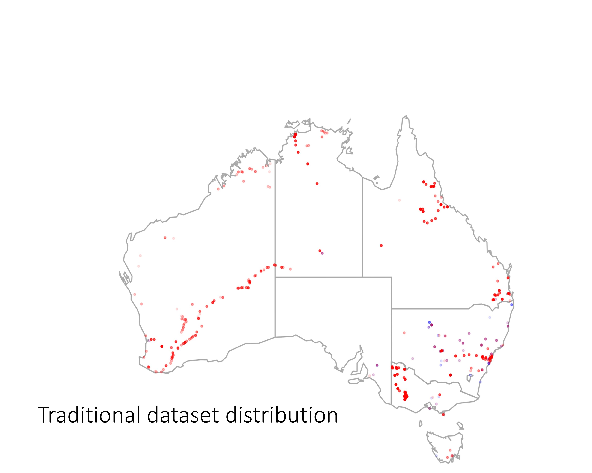
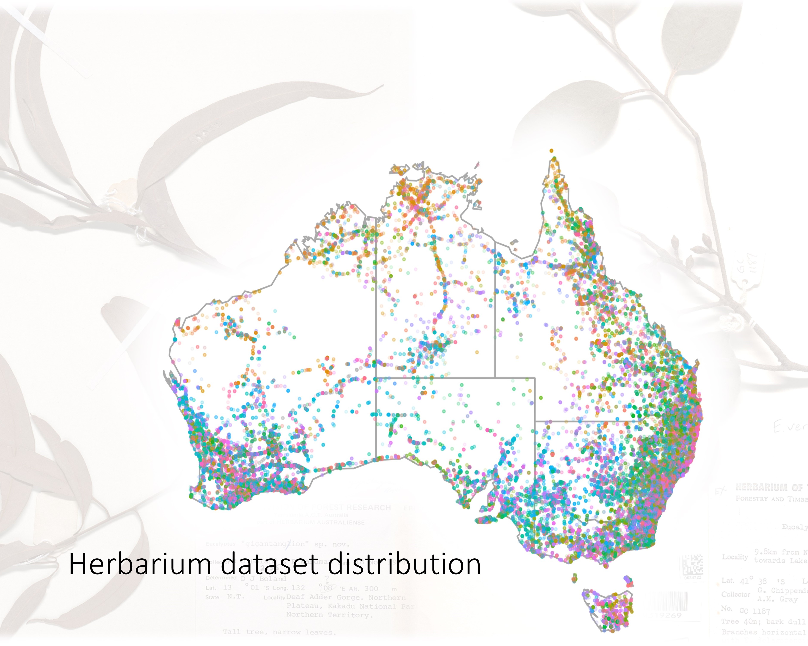
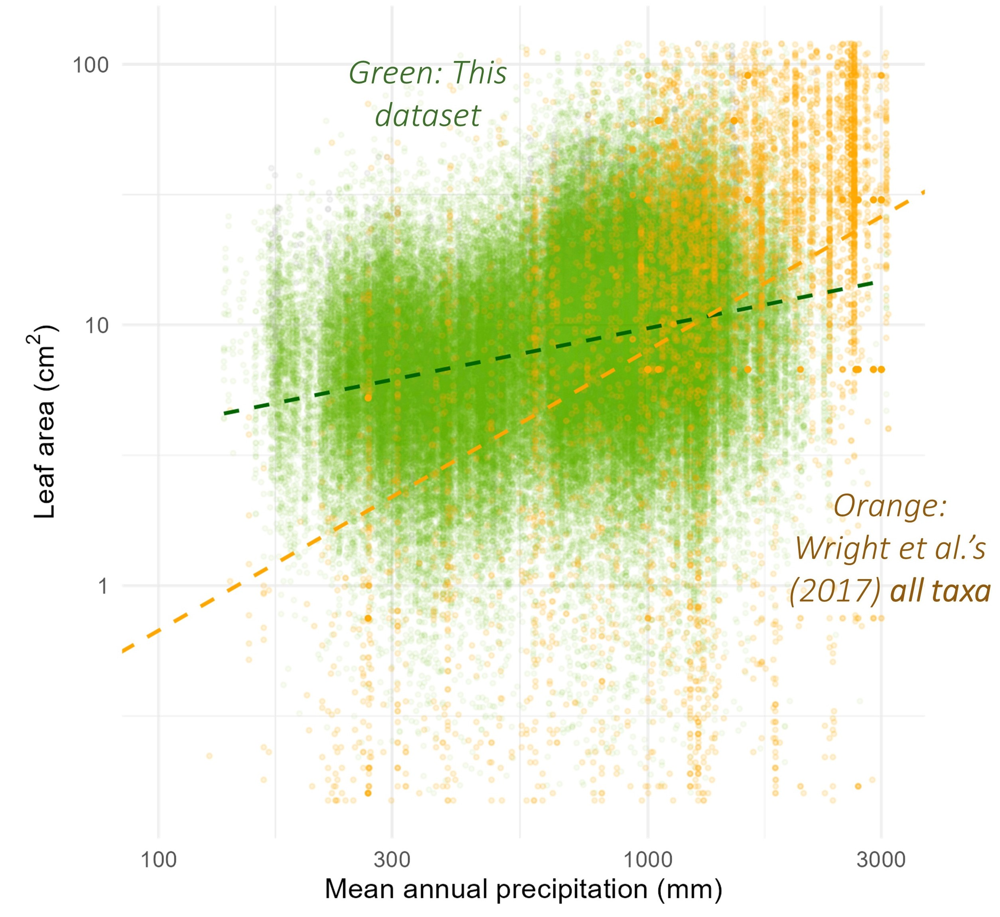
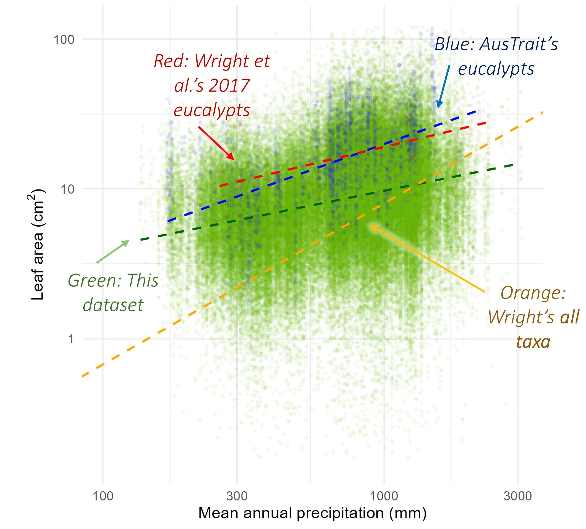
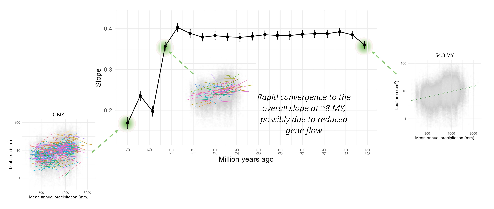

Using Machine Learning to Link Climate, Phylogeny and Leaf Area in Eucalypts Through a 50-fold Expansion of Current Leaf Trait Datasets Part 2
This is Part 2 of 2, here I analyse my dataset from the last part to explore two key questions
To look at the source code, feel free to check out my GitHub
Summary
Project explored how leaf traits shift across the Australian climate and how phylogeny shaped leaf traits
Found that leaf area was positively associated with mean annual precipitation
Saw a strong variation in the trait-climate relationship was seen within species
From the shallowest depths of this phylogeny to the deepest, i.e. from species to genera, there was an overall increase in the mean slope of the association between leaf area and precipitation
Saw was at ~8.5 MYA there was a rapid convergence to the overall slope hypothesised to be due to gene flow ceasing
Introduction
In this part of my project I wanted to see how the leaf trait changed across 1. Climate and 2. Phylogeny. Like mentioned in my last post, I could investigate how the trait changed in congruence with each other because of the site of the dataset.
In summary, the questions and hypothesise I proposed prior to the project were:
How do leaf traits shift across the Australian climate?
I hypothesise that leaf area and largest in-circle area will correlate positively with mean annual precipitation and temperatureTo what extent does phylogeny shape leaf traits?
I hypothesise that gene flow will resolve in large trait variability at a shallow phylogenetic level (within species), which will gradually resolve to a trait-climate relationship at deeper levels (for example, among species).
Context
To really understand why I was asking these questions, a bit of context is needed.
Firstly, leaf area. As many of you readers are probably well aware of, leaves are the fundamental units of photosynthesis. And because of this, they have a vast range of impacts at different levels of scales. From affecting the carbon cycle around the globe, to influencing species interaction at an individual level. Therefore, as a better understanding of leaf trait variation can result in better predictions and models.
We know that, leaf traits, such as leaf area, are tied to their environment. This may come in the form of a constraint, where a climatic variable may result in the trait being no bigger or smaller than a certain size (e.g., see Wright et al. 2017, Guo et al. 2000, Cornelissen 1999). For instance, leaf area has been found to increase from dry to wet environments and from colder to hotter climates. And this may have been due to leaf area being linked to thermal regulation. Where a more effective thermal regulation and reduced water loss is found in leaves that are smaller, particularly those that are more narrow. However, this trend isn’t always this simple and can vary at a geographic and taxonomic scale. As such, my study, for the first time, looks at this trend within every species of eucalypts (Angohphora, Corymbia, Eucalyptus) in detail for all of Australia. In particular I looked at eucalypt leaf traits of Australia, and how they varied against mean annual precipitation and climate
But what I found more interesting in this study was looking at this how evolutionary history played an influence on the relationship between trait and climate. As such, I aimed to investigate how this trait-climate trend changed within and across different phylogenetic classifications, such as species, subgenera and genera. Existing literature acknowledges that phylogeny and contemporary demography, including intraspecific gene flow, may result in this trait-climate trend within species being weaker, unrelated, or even following opposite directions to that reported among species. For example, gene flow between two populations may hinder the adaptation of leaf traits to their local environment, causing the trait-climate trend to diverge from the expected trend. On top of this, an individual’s evolutionary history may constrain phenotype and local adaptive capacity. However, current literature is unable to fully understanding these factors, possibly due to the limitations of current datasets generated using traditional methods.
My study places itself in a unique position with its use of the machine learning models detailed previously. With its application, I was able to create a comprehensive dataset that spans various taxonomic levels across Australia. By pairing this dataset with a fully resolved phylogenetic tree (Thornhill et al. 2019), I could link microevolution to macroevolution, and ask the questions I posed prior.
|  |  |
Note: As a preface, the following sections will focus on how leaf area varied against mean annual precipitation as that were the most interesting findings of all traits and climatic variables.
Results:
We found that leaf area was positively associated with mean annual precipitation. This aligned to what was found in other studies of eucalypts. However, when compared to a study that looked at all taxa globally, we saw that eucalypts had a weaker and shallower slope.
|  |  |
When then looked at how evolutionary history impacted the trait-climate relationship, i.e. the slope of our models. We saw that when we took a mean value within species, this resulted in the slope being greater and better reflected those of other studies (Falster et al. 2021, Wright et al. 2017). However, when species was added as a random effect we saw the opposite, a smaller slope. In essence, this meant that a strong variation in the trait-climate relationship was seen within species. A similar analysis was then done at different phylogenetic classifications including subgenera and genera. When looking at subgenera, we got the mean trait value within each slope and used that to see how the leaf trait changed against precipitation. And, as a result, we saw a dramatically greater slope (closer to that of other analyses), than in comparison to the species level. Likewise at the genera level, we also saw a greater slope, though less significantly than subgenera. In summary, from the shallowest depths of this phylogeny to the deepest, i.e. from species to genera, there was an overall increase in the mean slope of the association between leaf area and precipitation.
Furthermore, our machine learning method also allowed us to look at this model throughout the whole span of time of the phylogeny. We know that the average trait-climate slope of species is roughly at 0.2, and that the overall slope of eucalypts is 0.4 (i.e. no grouping). However, current literature is unable to answer what happens at these two points? Well this is where my massive dataset comes in. Using Thornhill’s resolved phylogenetic tree, we separated the entire age of the tree into 20 separate intervals. At each time interval, tips that had split prior to the point were kept as individual unique lineages, while those that had split after the time interval was merged by common ancestry into a single ‘lineage’. For instance, the 1st interval was at 0 million years ago and included every tip of the tree as a lineage (418 lineages). Whereas, at the 3rd interval, 8.57 million years ago, 77 lineages were present. Running the statistical model at each lineage, and generating the overall slope. We then generate the following graph. And what we saw was at ~8.5 MYA there was a rapid convergence to the overall slope (akin to the species to subgenera separation mentioned prior). In which, I hypothesised to be due to gene flow. Where, at this point, gene flow ceases and we see that rapid convergence of the slope to the genus level.
